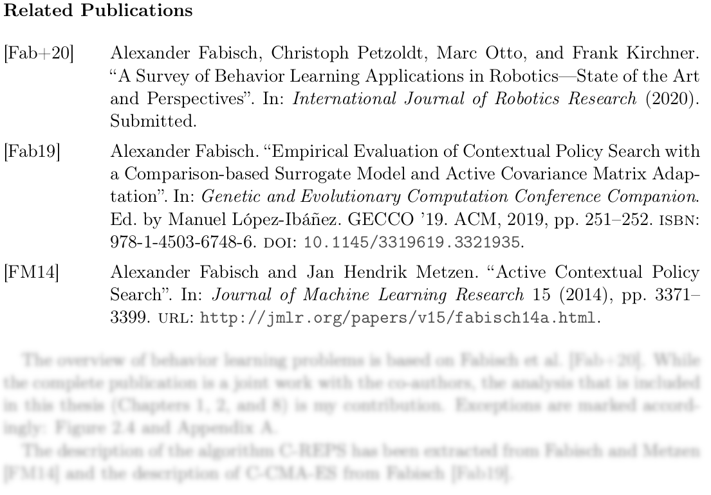
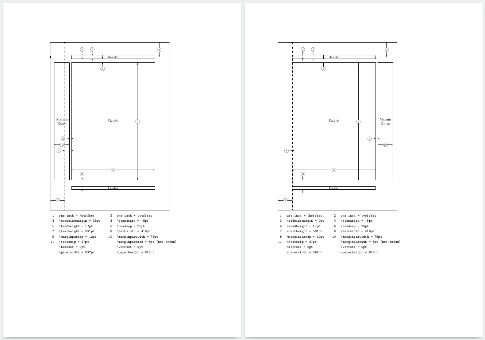
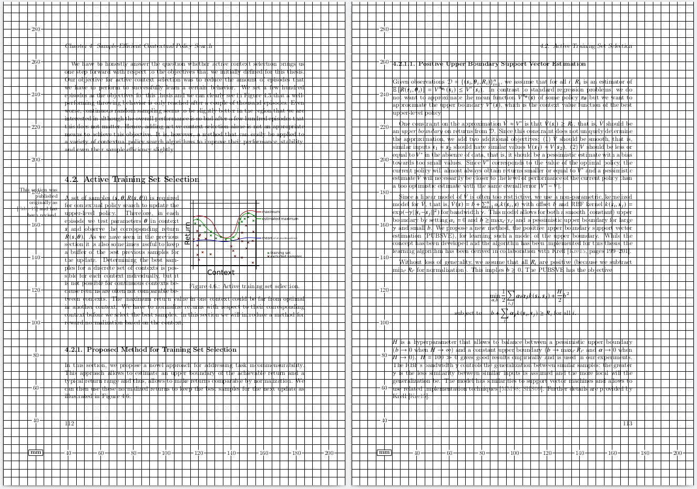

LaTeX for Dissertations
Since writing a dissertation is usually something that you do only once, I gathered a lot of knowledge that I probably won't need anymore. This is a brief summary of how the LaTeX code of my dissertation is structured. I hope it can be an inspiration for someone else. As I used continuous integration to automatically build the PDF and check PDF/A-1b validity, I will also talk about this in the end.
Include vs. Input
If you want to split your LaTeX code into multiple files you can use
'\input' or '\include'.
\input{mychapter}
will have the same effect as copying everything from mychapter.tex here.
\include{mychapter}
will create a page break before it includes the file. It does not work in the
preamble though. The benefit of \include is that you can put
\includeonly{mychapter, mychapter2}
in the preamble to only compile a selected subset of all chapters to make compilation much faster. It does not mess up the references (e.g., table of contents, bibliography, and glossary). This can be used if you work on a specific chapter. I found this out at the end of writing my thesis. That is why I put it in the beginning here. Don't make the same mistake. This will save you lots of time.
I use \input for everything in the preamble (e.g., package imports,
glossary entries) and \include for my chapters.
Document Class
\documentclass[
draft=false,
paper=a4,
paper=portrait,
pagesize=auto,
fontsize=11pt,
version=last,
headings=twolinechapter,
listof=totoc,
listof=chapterentry]
{scrbook}
I highly recommend to use the book class of Koma-Script for a dissertation.
This is my configuration for the final document. One of the more obscure
options here is 'headings=twolinechapter', which will print "Chapter X."
in a separate line before the title of a chapter.
'listof=totoc,listof=chapterentry' will add lists of tables and figures
as chapters to the table of contents.
I recommend to use Koma-Script in combination with the following package:
\usepackage{scrhack}
This will fix some common problems
Links:
Document Structure
This is the overall structure of the LaTeX document.
A large document is often split into (1) something before the main text (front matter), (2) main text (main matter), and (3) something after the main text (back matter).
\documentclass{...}
% ... many imports and definitions here ...
\begin{document}
\frontmatter
% title page(s)
\tableofcontents
% acknowledgments
% abstract
This is everything before the main text. '\frontmatter' will activate
roman page numbers and deactivate chapter numbering.
\mainmatter
\part{Title}
\chapter{Title}
Text
\section{Title}
Text
\subsection{Title}
Text
\subsubsection{Title}
Text
'\mainmatter' will switch to Arabic page numbers and turn on chapter
numbering. So here we have all the main text with numerous subdivisions.
I avoided to have less than two subdivisions per level. If you have,
e.g., a section with only one subsection, you should think about whether
you really need a subsection here. You might want to integrate the subsection
in the section or make a new section instead of a subsection.
\appendix
\chapter{Title}
'\appendix' will switch chapter numbering to letters.
\backmatter
\printglossaries
\listoffigures
\listoftables
\chapter{Bibliography}
\printbibliography[heading=none]
\end{document}
'\backmatter' will turn of chapter numbering. Putting the list of figures
and tables to the end is unusual. These typically are part of the front
matter. I found it to distracting at the beginning though and put it to
the end. We will come to the glossary and the bibliography later.
Links:
Bibliography and Citations
Although I used bibtex before, I chose to use biber and biblatex for my thesis.
\usepackage[
style=alphabetic,
natbib=true,
backend=biber,
maxnames=2,
maxbibnames=99]{biblatex}
\addbibresource{literature.bib}
The main reason for this decision is that it allows to easily create environments for which you can generate a specific bibliography. I used this feature to generate for each chapter a list of corresponding publications. Here is an example:
Code:
|
Result:  |
The option 'natbib' ensures that you can use '\citep{key}' to generate
citations of the form '(Names et al., Year)' and '\citet{key}' to generate
'Names et al. (Year)'.
Now you have to run 'biber documentname' (without file ending) after the
first pass of your LaTeX engine. A useful feature of biber is that it can
also check your .bib files for validity with 'biber --tool -V literature.bib'.
For better line breaks I used the command '\sloppy' before the complete
bibliography. Otherwise I had many lines (URLs, DOIs, etc.) that would go over
the text borders. It allows more space between words though.
Note that "[w]hen using babel [...] with biblatex, loading csquotes is recommended to ensure that quoted texts are typeset according to the rules of your main language." (source)
\usepackage[english=american]{csquotes}
csquotes is also good if you want to quote in the text:
\textcquote{CitationKey}{Some text here with ellipses at the end \textelp{}}
or as a new block:
\blockcquote[pages 100--101]{CitationKey}{Some long text.}
Links:
List of Abbreviations and Acronyms
In smaller documents it is easy to keep track of abbreviations and whether you already introduced them or not. With a document exceeding 100 pages I would suggest to use tools that support a proper glossary. LaTeX can do this automatically.
\usepackage[toc]{glossaries}
To create a glossary you have to call
\makeglossaries
in the document. Then you can define abbreviations with
\newacronym{MDP}{MDP}{Markov decision process}
Now
\gls{MDP} or \glspl{MDP}
will result in "Markov Decision Process (MDP) or MDPs" ('\glspl' means plural).
The abbreviation will be introduced once and then only the abbreviation will be
printed. No need to think about it. Later in the document you can print the
glossary with
\printglossaries
The package option 'toc' will add it to the table of contents.
Note that the external command 'makeglossaries documentname' (without file
ending) has to be executed after the first pass of your LaTeX engine.
Links:
Document Layout
There are several packages that can help you to fine-tune the layout.
\usepackage{layout}
This package provides the command \layout that will print page layout
variables for your document. This is the result in my case (shows both sides):

If you want to find out specific dimensions in the unit that you are interested in, the following package is useful:
\usepackage{layouts}
For example, put
\printinunitsof{mm}\prntlen{\textwidth}
\printinunitsof{mm}\prntlen{\textheight}
in the document for millimeter. I found it useful to find out the text dimensions and then scale figures appropriately without rescaling them in LaTeX.
A good way to check if there are any overfull horizontal boxes is the
'showframe' option of the geometry package:
\usepackage[showframe]{geometry}
This will draw lines around the important areas of each page.

The following package allows you to draw a grid on every page to precisely place elements.
\usepackage[grid=true,gridBG=true]{eso-pic}

Links:
The Mean Printer and Marginal Notes
I printed my dissertation on my own. It turned out that the printer that I used (with the specific driver that I used) didn't print 4.23 mm at each side of the paper. Unfortunately, I had some marginal notes that the printer wouldn't print completely; one and a half letter were missing. I fixed that by setting
\usepackage[marginparwidth=75pt]{geometry}
after using the layout package to find out the previous marginparwidth and
converting 4.23 mm to pt according to this table.
Since there was now less space for the margin notes, LaTeX couldn't find
a good way to break lines and I modified my command to make notes on
the margin to
\newcommand{\marginparc}[1]{%
\ifthispageodd
{\marginpar{\raggedright\footnotesize #1}}
{\marginpar{\raggedleft\footnotesize #1}}}
which works only with Koma-Script in this form. The text is smaller and it is aligned to the direction of the page's center. But the conclusion of this should be: check the printer before you print!
Encoding
If you use pdflatex and have to write accented characters (and this is very likely if you want to cite anything from authors with Portuguese, Spanish, French, Italian, German, Danish, Norwegian, Swedish, Finnish, ... names) you should better import the fontenc package before inputenc. It enables proper hyphenation of words that contain accented characters and allows to copy those characters from the output document. If you want to write your thesis in UTF-8 you should import inputenc. This is not required if you build your thesis with a UTF-8 based engine like lualatex though.
\usepackage[T1]{fontenc}
\usepackage[utf8]{inputenc}
Links:
Language
This is required in my thesis because it is written in English but has a German summary in the beginning because this is required by my university.
\usepackage[ngerman,english]{babel}
Babel changes the language of a document, that is, translates "table of contents", "chapter", citations, and dates if the default language is not English. It will also apply proper hyphenation to the text. It is possible to use multiple languages. The default language is the last option of the package. We can switch to other languages per section with
\begin{otherlanguage}{ngerman}
Etwas Text in deutscher Sprache...
\end{otherlanguage}
Links:
Figures and Illustrations
Wide Image
\usepackage{chngpage}
This is something that you usually should not do, but sometimes I found it aesthetic to extend a figure a bit on one side:
\hfuzz=100pt % suppress warnings
\begin{adjustwidth}{-\evensidemargin-0.8in}{-\rightmargin}
\includegraphics[width=0.92\paperwidth]{path}
\end{adjustwidth}
\hfuzz=0pt
Note that this is for an image on a left page. On a right page
you have to play around with \oddsidemargin and \leftmargin.
Links:
Full Page Image
\usepackage{floatpag}
This package provides the command '\thisfloatpagestyle' to remove the header
and the page number and I used it for large figures that fill an entire page.
\begin{figure}
\thisfloatpagestyle{empty}
\includegraphics[width=\textwidth]{figure}
\caption{Bla bla.\label{fig:bla}}
\end{figure}
Links:
Barrier for Figures
Precise figure placement is hard.
\usepackage{placeins}
This package provides the command
\FloatBarrier
that prevents floats from moving past this line. I found this useful to force LaTeX to make a page with multiple figures.
Links:
Figure Surrounded by Text
\usepackage{wrapfig}
Example (figure on the right side):
\begin{wrapfigure}{r}{0.5\textwidth}
\centering
\includegraphics{figure}
\caption{Bla bla.\label{fig:bla}}
\end{wrapfigure}
Links:
Multiple Subfigures
In papers, you often see floats that consist of multiple figures that were arranged manually, for example, with a tabular environment. You don't have to do that. Use this package.
\usepackage[caption=false]{subfig}
It provides the command '\subfloat':
\begin{figure}
\centering
\subfloat[Caption of first subfigure.\label{fig:bla1}]
{\includegraphics[width=0.45\textwidth]{subfigure1}}
\hfill
\subfloat[Caption of second subfigure.\label{fig:bla2}]
{\includegraphics[width=0.45\textwidth]{subfigure2}}
\caption{Caption of figure.\label{fig:bla}}
\end{figure}
If you have multiple subfigures with different heights it is difficult to arrange them vertically. There is a package for that.
\usepackage[export]{adjustbox}
Now, to arrange two figures vertically at the center, you can use the option
'valign=m' of '\includegraphics' that is provided by adjustbox and you
should add a phantom box of the size of the second figure to the first one.
\begin{figure}
\centering
\subfloat[Bla 1.]
{%
\includegraphics[width=0.45\textwidth,valign=m]{subfigure1}%
\vphantom{\includegraphics[width=0.45\textwidth,valign=m]{subfigure2}}%
}
\hfill
\subfloat[Bla 2.]
{\includegraphics[width=0.45\textwidth,valign=m]{subfigure2}}
\caption{Bla.}
\end{figure}
Links:
Tables
More Beautiful Tables
Here (in particular slide 8) is a good guide on how to make nice tables.
Table over Multiple Pages
In a few cases I had to make tables that are longer than one page.
\usepackage{longtable}
You can define a table head that appears on every page
(everything before '\endhead').
\begin{longtable}{p{2cm}p{11.8cm}}
\toprule % you need the package 'booktabs' for this
A & B\\
\midrule
\endhead
1 & 2\\
1 & 2\\
1 & 2\\
1 & 2\\
\bottomrule
\end{longtable}
The rules are defined in the package booktabs.
\usepackage{booktabs}
Links:
Code Listing
For code formatting I use the following package:
\usepackage{listings}
Example:
\begin{algorithm}[t]
\begin{lstlisting}[language=Python,basicstyle=\footnotesize]
import numpy as np
x = np.linspace(0, 1, 101)
\end{lstlisting}
\caption{Some code.}
\label{alg:example}}
\end{algorithm}
Links:
Pseudocode
I use the following two packages to typeset pseudocode.
\usepackage{algorithm}
\usepackage{algpseudocode}
An algorithm in a float environment looks like this.
\begin{algorithm}
\begin{algorithmic}[1]
\Require algorithm inputs here
\State $a \gets 5$\\
\Comment{assign 5 to $a$}
\While{not converged}
\State $b \gets a + 1$
\For{$i \in \{1, \ldots, N\}$}
\State $b \gets 2 b$
\EndFor
\EndWhile
\end{algorithmic}
\caption{Caption.}
\label{alg:example}
\end{algorithm}
Links:
Math Fonts
\usepackage{newtxmath}
%\usepackage{amssymb} % conflicts with newtxmath
A font similar to Times New Roman for math. The package also provides several
typical mathematical symbols. Thus, it collides with amssymb and you can't
use both. This is how the result looks like:

To change the appearance of '\mathcal' I use the following package:
\usepackage[mathcal]{euscript}
Links:
SI Units
For consistent appearance of units I highly recommend this package.
\usepackage{siunitx}
Now you can write in your text:
\SI{1}{\metre}
\SI{2}{\centi\meter}
and much more complex units. You also don't have to think about whether you had put a space between the number and the unit before. The package automatically does this for you.
Links:
Todo Notes
I found it useful to put notes in the PDF output.
\usepackage{todonotes}
Use the option [disable] for final version.
\todo{this will create a note on the margin}
\todo[inline]{this will create a comment in the text}
You can also print a list of all notes with
\listoftodos
Links:
Beginning of a Chapter
I like to put a related quote at the beginning of a chapter. You can do that with the scrbook class.
Code:
|
Result:
|
Another chapter looks like this at the beginning:

There are two elements here. The first one is the style of the heading, which can be defined in scrbook like this:
\definecolor{chaptercolor}{RGB}{152,152,152}
\renewcommand*\chapterheadstartvskip{\vspace*{45pt}}
\renewcommand*{\chapterformat}{%
\parbox{\textwidth}{\hfill\fontsize{35.83}{42}\selectfont\color{chaptercolor}\chapappifchapterprefix{\ }\bfseries\thechapter\autodot\enskip}}
\addtokomafont{disposition}{\normalfont\bfseries}
\addtokomafont{chapterprefix}{\mdseries}
The image at the top is included with tikz:
% before document:
\usepackage{tikz}
% include image:
\tikz[remember picture,overlay] \node[opacity=0.75,inner sep=0pt] at (8,6.95){\includegraphics[width=\paperwidth]{image}};
If you want to do this, the image should of course be somewhat related to the content of the chapter.
Widows and Orphans
"In typesetting, widows and orphans are lines at the beginning or end of a
paragraph which are left dangling at the top or bottom of a page or column,
separated from the rest of the paragraph."
(Wikipedia)
A single line at the top or bottom of a page is just not aesthetic and we want
to avoid that. The simplest trick is to set high penalties for them globally in
the preamble (which means before '\begin{document}'):
% penalizes orphans
\clubpenalty=10000
% penalizes widows
\widowpenalty=10000
% penalizes widows that are immediately followed by a formula \[ ... \]
\displaywidowpenalty=10000
Another trick that I used often is to enlarge a page by one line with
\enlargethispage{\baselineskip}
It looks better if both the left and right page have the same length, so I typically extended them both.
Links:
Prior Publications
Although my dissertation is a monograph, large parts of it have been published before. Prior publication must be indicated. This is good scientific practice. Otherwise, for example, survey papers can be distorted. I put marginal notes at the beginning of a chapter or section that refer to publications that the text is based on. At the end of each chapter the corresponding publications are listed. At the same place I describe my contributions and the contributions of my co-authors.
PDF/A-1b
My library requires a specific format for electronic publication of the thesis: PDF/A-1b.
The first step to ensure that your document is compatible is to test for
compatibility. There are many tools out there that claim to enable this but
many of them don't actually work. The tool that I relied on in the end is
veraPDF. Since it is used more as a GUI tool, I had
to find something that has a similar functionality but works from a command
line to integrate it into continuous integration. For that I use Apache
preflight 1.8.16 (available here),
which was compatible to the package openjdk-13-jdk that I used in my Ubuntu
20.04 docker image that I used for continuous integration. I had problems
setting up preflight 2.X. Although preflight complains about some issues that
veraPDF does not see, these can be ignored so that I could test for PDF/A-1b
during continuous integration with good enough certainty.
If you only want to check whether all fonts are embedded, you can use
pdffonts document.pdf
and check the column emb.
The main problem with PDF/A-1b compatibility are PDF figures. I work a lot with inkscape for illustrations and matplotlib for plots. My solution for this problem is to use ghostscript to convert every PDF that is included in the main document to PDF/A-1b:
gs -dPDFA -dBATCH -dNOPAUSE -dNOOUTERSAVE -sColorConversionStrategy=UseDeviceIndependentColor -sProcessColorModel=DeviceCMYK -sDEVICE=pdfwrite -sPDFACompatibilityPolicy=1 -sOutputFile=output_figure.pdf input_figure.pdf
To make the main LaTeX document compatible I use the package pdfx, which already takes care of a lot of problems and should be important almost at the beginning:
\usepackage[a-1b]{pdfx}
However, this is not enough to fix all problems in my case so that I also had to let ghostscript convert the whole document.
Continuous Integration
I used git for version control and continuous integration to automatically build and validate the latest version of my thesis. I set up a docker container based on a recent Ubuntu to match my system.
FROM ubuntu:20.04
ENV DEBIAN_FRONTEND=noninteractive
RUN apt-get update -qq && apt-get install -y \
texlive-full \
libreoffice \
pandoc \
git \
wget \
sudo \
openjdk-13-jdk \
poppler-utils \
ghostscript \
pdftk
RUN mkdir -p /opt/bin
COPY preflight-app-1.8.16.jar /opt/bin/preflight-app-1.8.16.jar
You certainly don't need all of these packages (e.g., libreoffice or pdftk).
As mentioned previously, preflight was used to check PDF/A-1b compatibility.
The docker image is also available as 'af01/dissertation' from dockerhub.
I used GitLab CI. My setup looks similar to this (some checks are omitted):
stages:
- generate
- postprocessing
- evaluate
genpdf:
stage: generate
image: af01/dissertation
script:
- pdflatex -interaction=nonstopmode dissertation.tex
- biber dissertation
- makeglossaries dissertation
- pdflatex -interaction=nonstopmode dissertation.tex
- pdflatex -interaction=nonstopmode dissertation.tex
- cat dissertation.log
artifacts:
paths:
- $CI_PROJECT_DIR/dissertation.pdf
- $CI_PROJECT_DIR/dissertation.xmpdata
expire_in: 2 weeks
when: always
tags:
- docker
postprocesspdfa:
stage: postprocessing
image: af01/dissertation
script:
- scripts/convert_pdfa.sh dissertation dissertation_pdfa
- cp dissertation.xmpdata dissertation_pdfa.xmpdata
artifacts:
paths:
- $CI_PROJECT_DIR/dissertation_pdfa.pdf
- $CI_PROJECT_DIR/dissertation_pdfa.xmpdata
expire_in: 4 days
when: always
tags:
- docker
checkpdfa:
stage: evaluate
image: af01/dissertation
script:
- java -jar /opt/bin/preflight-app-1.8.16.jar dissertation_pdfa.pdf > pdfareport.txt || echo "Preflight report is not empty"
- cat pdfareport.txt
- scripts/check_pdfareport.sh pdfareport.txt
artifacts:
paths:
- $CI_PROJECT_DIR/pdfareport.txt
expire_in: 1 week
when: always
tags:
- docker
Source Code
The source code of my thesis without images and literature is available here.